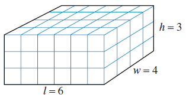
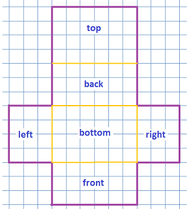
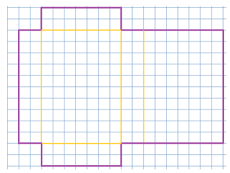
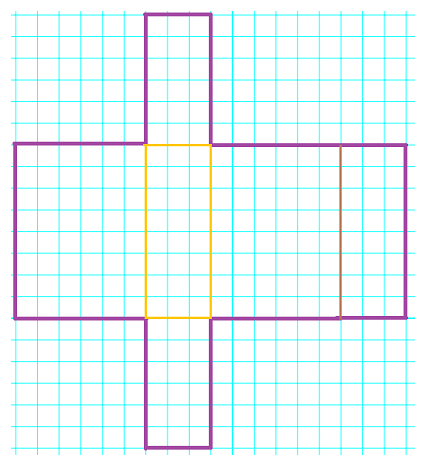
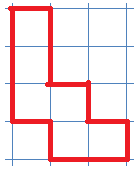
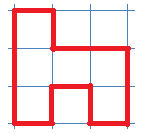
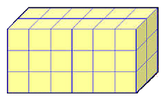
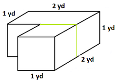
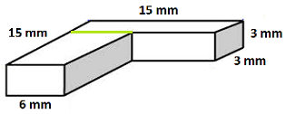
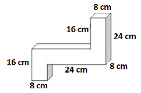

This is Brandi, the St. Bernard, and this is her dog house. We are going to paint her dog house. (You get to choose the color.)
We need to know how much paint to buy, so we’ll start by calculating the area we want to paint. We won’t paint the roof, of course, or the doorway, so that leaves the four sides of the house: front and back, left and right.
Activity3.1.1.Surface Area.
Here are diagrams of the four faces of the dog house. Each grid line represents 6 inches. We’ll find the area of each face.
Suggestion: Calculate the area in square feet.
Area of front face:
Hint: You might think of this face as a rectangle with a triangle on top, and a smaller rectangle cut out of the middle.
Area of back face:
Hint: Now that you know the area of the front face, what’s the easiest way to find the area of the back face?
Area of left face:
Area of right face:
Hint: These two are easy, and the same!
Total area:
On average, a gallon of paint covers 350 square feet. Will you have enough paint if you buy one quart?
When we calculate the sum of the areas of the outside faces of a three-dimensional object, it is called the surface area of the object. The simplest object for finding surface area is a box. Here is one.

Example3.1.1.
Find the surface area of the box shown above. The dimensions are given in meters.
You may find it easier to visualize the six faces of the box in an "unfolded" diagram.
Imagine cutting the edges of the box on the red lines above and unfolding it to get a flat surface that looks like this:

If you fold up the sides along the yellow lines and close the top, you will get back the original box. (You can try this yourself by tracing the figure onto a piece of paper and cutting it out!)
Subsection3.1.2Boxes and Cubes
A cube is a box whose length, width, and height are all equal. That means that all six faces are identical. Here is a cube and an unfolded version.
Checkpoint3.1.3.
A wooden block in the shape of a cube measures 3 inches on each side. What is its surface area?
If you have never tried to draw a three-dimensional box before, follow the steps below.
Interlude: How to Draw a Box.
Step 1 Draw a rectangle for the front of the box.
Step 2 Draw a second rectangle for the back of the box.
Step 3 Connect the corners from the front to the back.
Activity3.1.2.Boxes Unfolded.
It may be helpful to cut out copies of the diagrams and fold them up.
Which of these diagrams can be folded up into a cube?
If it makes a cube, label the squares with the faces of your cube: Front, Back, Top, Bottom, Left, Right.
Sketch the box that can be made from each diagram below, and label its dimensions. The grids represent inches.

Find the surface area of each of the boxes in Problem 2.
Subsection3.1.3Volume
Remember the cube in Checkpoint 3.1.3? In that exercise we were interested in the outer surface of the cube, the six faces that can be "unfolded" into a flat two-dimensional surface. Now we’ll switch our focus to the three-dimensional space enclosed inside a box. We’ll use cubes to measure that space.
Just as we use square units, such as square inches or square meters, to measure the area of a two-dimensional region, we use cubic units to measure the volume or amount of space inside a three-dimensional object. For instance, a cubic inch is the amount of space enclosed inside a cube that measures 1 inch on each side. A cubic meter is .... well, you get the idea.
Example3.1.4.
Find the volume of the box shown below. The grid lines represent centimeters.
We’d like to know how many "blocks," or cubic centimeters fit inside the box. Do we have to count them all? No: first let’s look at just the top layer of blocks.
Counting along the front face, there are 6 rows of 4 blocks each. So the volume of the top layer is
We don’t really need the grid lines to help us calculate the volume of a box. For example, here is a picture of a box with the standard labels for its dimensions.
Let’s look at a particular example. We’ll figure out how many cubic inches fit inside the box below, just as we did in Example 3.1.4.
The box is 10 inches high, so there are 10 layers of cubic inch blocks. Each layer contains 20 rows of 12 blocks each. One layer contains
Multiply the length times the width times the height.
Activity3.1.3.Volume.
Look back at the unfolded boxes in Problem 2 of Activity 3.1.2. (Here are tiny pictures of them.)
Draw the folded up version of each box, and label its dimensions.
Find the volume of each box.
Note3.1.7.
Do you see the difference between surface area and volume?
Surface area measures the area of the \(\blert{\text{outside surface}}\) of a three-dimensional object.
Volume measures the amount of \(\blert{\text{space inside}}\) the object.
Surface area is measured in square units, and volume is measured in cubic units. For example, the surface area of the cube shown at right is 6 square inches, and its volume is 1 cubic inch.
Surface Area: 6 square inches
Volume: 1 cubic inch
You may be wondering how we can find the volume of objects with curved sides, which cannot be completely filled with cubical blocks. In later lessons we’ll learn how to find the volume and surface area of familiar objects such as cylinders and spheres.
But here is a method that will work on many irregular objects, such as the pitcher shown above. Fill the object with liquid or sand. Then pour the contents into a measuring cup or a box labeled with grid lines. The volume of liquid in the measuring cup is the same as the volume that came out of the pitcher!
Subsection3.1.4Vocabulary
volume
surface area
cube
cubic units
Exercises3.1.5Practice 3.1
Exercise Group.
Answer the questions in Problems 1-10 with complete sentences.
1.
What is the surface area of a three-dimensional object? What units do we use to measure surface area?
2.
Describe a method for finding the surface area of an object.
3.
How many faces does a box have?
4.
What is a cube?
5.
What does volume measure? What units do we use for volume?
6.
Give another common English meaning for the word "volume" that is not the same as its mathematical meaning.
7.
What is a cubic meter?
8.
What is the difference between area and surface area?
9.
Is there a cube whose volume and surface area are the same number?
10.
If you know the volume of a box and the area of its base, how can you find its height?
Exercise Group.
To answer the questions in Problems 11-20, should you find a perimeter, an area, a surface area, or a volume?
11.
How much water is in the community swimming pool?
12.
How much fertilizer do you need to cover your vegetable garden?
13.
How much shade film do you need to cover the greenhouse?
14.
How much weather-stripping do you need to go around the picture window?
15.
How far is it to walk around the lake?
16.
How much tile do you need for the bathroom floor?
17.
How much fabric do you need for a hot-air balloon?
18.
How much water do you use when taking a bath?
19.
How much contact paper do you need to line the dresser drawers?
20.
How many truckloads of fill dirt does the landscaper need?
Exercise Group.
For Problems 21-22,
Sketch the box that can be made from each diagram, and label its dimensions. The grids represent inches.
Find the surface area of the box.
Find the volume of the box.
21.

22.
Exercise Group.
For Problems 23-26, decide whether the figure can be folded into a cube.
23.

24.
25.

26.
Exercise Group.
For Problems 27-28, the grid lines represent feet.
Find the volume of the box.
Find the surface area of the box.
27.
28.

Exercise Group.
For Problems 29-30,
Find the volume of the cube.
Find the surface area of the cube.
29.
30.
Exercise Group.
For Problems 31-32,
Find the volume of the box.
Find the surface area of the box.
31.
32.
Exercise Group.
For Problems 33-34, the grid lines represent meters.
Find the volume of the object.
Find the surface area of the object.
33.
34.
Exercise Group.
For Problems 35-38,
Find the volume of the object.
Find the surface area of the object.
35.

36.

37.
38.

Exercise Group.
For Problems 39-42, show your work.
39.
A rectangular wooden tray measures 12 inches by 18 inches, and the sides are 3 inches high. How much wood is used to make the tray?
40.
A roll of wrapping paper contains 60 square feet of paper. Is that enough to cover a box that measures 4.2 feet by 3 feet by 2.5 feet?
41.
Joelle’s aquarium is rectangular and measures 4 feet by 2 feet by 3 feet tall. What is the volume of the aquarium? One cubic foot holds 7.48 gallons of water. How many gallons of water would fill the aquarium?
42.
Brandi’s owner keeps her dog food in a rectangular plastic bin that measures 15 inches by 15 inches by 2 feet tall. Is the bin large enough to hold two 30-pound bags of dog food that measure 18 inches by 27 inches by 6 inches?
Exercise Group.
For Problems 43-46,
Find the unknown dimension.
Sketch the object, and label its dimensions.
43.
Daisy plans to buy a new refrigerator. The floor space for the refrigerator is 3 feet wide by 2 feet deep. The refrigerator takes up 36 cubic feet of space. How tall is the refrigerator?
44.
Darel is building a patio that is 12 feet wide by 16 feet long. The contractor says he will need 64 cubic feet of concrete. How deep will the concrete be?
45.
A pick-up truck advertises that is has 150 cubic feet of cargo space. If the cargo bed is 6 feet wide and \(2\dfrac{1}{2}\) feet deep, how long is it?
46.
Keesha has mixed cake batter in a 2.5 quart bowl. She estimates that the bowl is \(\dfrac{3}{4}\) full of batter. If her cake pan is 8 inches square, how tall must it be to hold the batter? You will need to know that there are 32 ounces in a quart, and 1 fluid ounce fills 1.8 cubic inches
Exercise Group.
For Problems 47-50, make a sketch and show your work.
47.
Shawn is building a block wall in his garden. It will be 2 feet high, 1 foot thick, and 16 feet long. The blocks measure 8 inches by 8 inches by are 6 inches thick. How many blocks will he need? (There are 12 inches in a foot.)
48.
The bottom shelf in Katya’s pantry is 30 inches wide, 24 inches deep, and 12 inches tall. How many plastic containers that measure 6 inches by 6 inches by 4 inches tall can she fit on the shelf?
49.
A bale of hay measures 2 feet by 2 feet by 4 feet. How many bales of hay can Orville stack in a hayloft that is 20 feet wide, 10 feet deep, and 8 feet tall?
50.
Oskar is in charge of shipping textbooks to elementary schools. The fifth-grade reader is 6 inches wide, 8 inches tall, and 2 inches thick. How many readers can he pack into a box that is 40 inches wide, 30 inches deep, and 12 inches tall?
51.
Find a small box, such as a cereal box or shoe box. Use centimeter grid paper to cover all six sides of the box. Explain how you can use the grid paper to calculate both the surface area and the volume of the box.
52.
Complete the table with the volumes and surface areas of cubes.
Side of Cube
Surface Area
Volume
1 cm
\(\hphantom{Six times H}\)
\(\hphantom{Six times H}\)
2 cm
\(\hphantom{Six times H}\)
\(\hphantom{Six times H}\)
3 cm
\(\hphantom{Six times H}\)
\(\hphantom{Six times H}\)
4 cm
\(\hphantom{Six times H}\)
\(\hphantom{Six times H}\)
5 cm
\(\hphantom{Six times H}\)
\(\hphantom{Six times H}\)
10 cm
\(\hphantom{Six times H}\)
\(\hphantom{Six times H}\)
53.
Give the dimensions of several boxes that have volume 36 cubic feet. Find the surface area of each box.
Height
Length
Width
Surface Area
1 ft
\(\hphantom{Six times H}\)
\(\hphantom{Six times H}\)
\(\hphantom{Six times H}\)
2 ft
\(\hphantom{Six times H}\)
\(\hphantom{Six times H}\)
\(\hphantom{Six times H}\)
3 ft
\(\hphantom{Six times H}\)
\(\hphantom{Six times H}\)
\(\hphantom{Six times H}\)
4 ft
\(\hphantom{Six times H}\)
\(\hphantom{Six times H}\)
\(\hphantom{Six times H}\)
5 ft
\(\hphantom{Six times H}\)
\(\hphantom{Six times H}\)
\(\hphantom{Six times H}\)
54.
You can make an open box from a standard sheet of paper measuring 812 inches by 11 inches. Cut out four equal square corners from the paper and fold up the edges that are left to form the sides of the box, as shown below.
The volume of the resulting box depends on the size of the square cut-outs. Complete the table to find the volume of the box for squares of various sizes.
Square size
Length of box
Width of box
Height of box
Volume of box
0.5 in
\(\hphantom{Six times H}\)
\(\hphantom{Six times H}\)
\(\hphantom{Six times H}\)
\(\hphantom{Six times H}\)
1 in
\(\hphantom{Six times H}\)
\(\hphantom{Six times H}\)
\(\hphantom{Six times H}\)
\(\hphantom{Six times H}\)
1.5 in
\(\hphantom{Six times H}\)
\(\hphantom{Six times H}\)
\(\hphantom{Six times H}\)
\(\hphantom{Six times H}\)
2 in
\(\hphantom{Six times H}\)
\(\hphantom{Six times H}\)
\(\hphantom{Six times H}\)
\(\hphantom{Six times H}\)
2.5 in
\(\hphantom{Six times H}\)
\(\hphantom{Six times H}\)
\(\hphantom{Six times H}\)
\(\hphantom{Six times H}\)
3 in
\(\hphantom{Six times H}\)
\(\hphantom{Six times H}\)
\(\hphantom{Six times H}\)
\(\hphantom{Six times H}\)
What do you notice about the volume as the size of the square cut-out increases?
What size cut-out produced the largest volume in the table?
Why can’t the size of the square cut-out be more than \(4\dfrac{1}{4}\) inches?
Exercise Group.
For Problems 55-56, it will be helpful to have a set of small cubes to experiment with.
55.
Here is a picture of four 1-inch cubes arranged face-to-face.
What is the volume of the arrangement? What is its surface area?
Sketch some other ways you can arrange four cubes face-to-face. (For example, one way is in a straight line.) What is the smallest surface area you can arrange? What is the largest?
56.
How many small cubes will you need to build the next larger size cube?
How many small cubes will you need to build the next larger size cube after that?
One more time: how many small cubes to build the next cube?

 Area of front face:Hint: You might think of this face as a rectangle with a triangle on top, and a smaller rectangle cut out of the middle.Area of back face:Hint: Now that you know the area of the front face, what’s the easiest way to find the area of the back face?
Area of front face:Hint: You might think of this face as a rectangle with a triangle on top, and a smaller rectangle cut out of the middle.Area of back face:Hint: Now that you know the area of the front face, what’s the easiest way to find the area of the back face? Area of left face:Area of right face:Hint: These two are easy, and the same!
Area of left face:Area of right face:Hint: These two are easy, and the same!